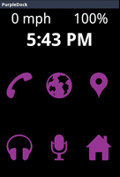
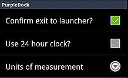

PurpleDock
PurpleDockPurpleDock is a simple replacement for the car dock app that ships with many handsets. The design goals for the app were big buttons that are easy to reach and the ability to get to the home screen when necessary.
Is PurpleDock better than your OEM app? Maybe, maybe not, but it does what I want and I hope it works for you.
PurpleDock works in both Portrait and Landscape orientation and has been tested with phones running Android 2.2 (Froyo), 2.3.x (Gingerbread), and 4.0.x (Ice Cream Sandwich). It works when connected to power and disconnected, although I deliberately throttle back the GPS usage when not connected to power in order to save battery life.
Using PurpleDock
There are five buttons that PurpleDock uses to launch different apps. The sixth button, with a home icon, quits PurpleDock and takes you to the home screen. The buttons and their purposes are
- Phone
- Launches
Intent.ACTION_DIAL
, which requires telephony on the device - Maps
- Launches
Intent.ACTION_VIEW
with "geo:" + latitude + longitude - Places
- By default, launches Places
(com. google. android. apps. maps at maps. PlacesActivity)
This behavior can be overridden. - Music
- By default, launches Google Music
(com. google. android. music at music. activitymanagement. TopLevelActivity)
This behavior can be overridden. - Voice Search
- By default, launches Voice Search
(com. google. android. voicesearch at voicesearch. RecognitionActivity)
This behavior can be overridden. - Home
- Quit PurpleDock and go to Home screen. With this power comes responsibility. Don't text and drive.
Overriding Behavior
 On the three buttons for Music, Places, and Voice Search, if you press and hold the button for 1 second, you will get a slight haptic (vibrating) feedback and a dialog will appear. This dialog lets you modify the values for launching an app from the button. If you want to launch a different music player app, you need to find its fully qualified name and the name of its top level Activity.
On the three buttons for Music, Places, and Voice Search, if you press and hold the button for 1 second, you will get a slight haptic (vibrating) feedback and a dialog will appear. This dialog lets you modify the values for launching an app from the button. If you want to launch a different music player app, you need to find its fully qualified name and the name of its top level Activity.
I will eventually make a better UI for this, but give it some time. If you end up messing up these values, you can always reset them by choosing the "Reset Components" item from the menu. This will reset all 3 buttons to their original factory state.
Preferences
There are a few things you can change with PurpleDock. You can set whether the clock displays in 12 or 24 hour format and whether the speed displays in Imperial or Metric units. Also, whether to pester you when you exit. For now, that's it.